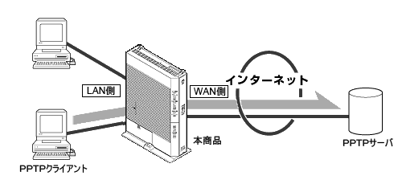
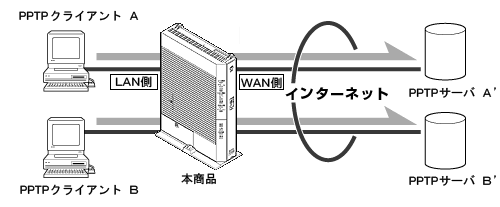
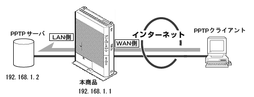

| VPNパススルー（IPv4のみ） |
仮想プライベートネットワーク(VPN : Virtual Private Network)接続を使用することにより、インターネットを経由して下記のようなアクセスが可能です。
・LAN側のVPNクライアントからWAN側のVPNサーバへのアクセス
・WAN側のVPNクライアントからLAN側のVPNサーバへのアクセス
VPNのプロトコルには、PPTP(Point to Point Tunneling Protocol )、IPsec(IP Security)、L2TP(Layer 2 Tunneling Protocol)が使用できます。 |
|
| |
＜ご注意＞ −本商品にて「IPsecパススルー通信」を行う場合−
- 本機能はIPv6には対応しておりません。
- 本商品はPPTP/IPsec/L2TP対応のVPNサーバとしてのみ動作します。
- 本商品に接続できるVPNサーバは1台のみです。
- 1つのIPsecサーバに対して、複数セッションの通信提供はできません。
- 本商品内のLANにIPsecサーバを構築する場合は、静的IPマスカレード設定を併用する必要があります。
- IKE(Internet Key Exchange)を使ったIPsecパススルー通信を行う場合には、静的IPマスカレード設定を併用する必要があります。
- 静的IPマスカレード設定を必要とする通信には、同時に複数台の端末を指定できません。
|
|
| |
| PPTPの利用例 |
ここでは、ネットワーク上でのPPTPの利用例を示します。
なお、IPsec、L2TPの場合でもPPTPと同じような構成で利用できます。
＜利用例1＞では、自宅からインターネット経由で会社のネットワークにアクセスできます。
＜利用例2＞では、自宅の複数のパソコンからインターネット経由でそれぞれ別のネットワークにアクセス
できます。
＜利用例3＞では、自分のネットワークに外部のパソコンからアクセスさせることができます。
また、PPTP は、TCP/IPベースのデータネットワーク上にVPNを作成することによって、リモートコンピュータからプライベートサーバへのセキュリティで保護されたデータ転送を可能にします。
|
＜利用例1＞
本商品に接続したPPTPクライアントからPPTPサーバに接続する

|
＜利用例2＞
本商品に接続したPPTPクライアントからそれぞれ別のPPTPサーバに接続する

|
＜利用例3＞
本商品に接続したPPTPサーバに接続する

本商品に接続できるPPTPサーバ/IPsecサーバは1台のみです。 |
|
| |
＜お知らせ＞
- PPTP機能またはIPsec機能のサポート状況および設定方法の詳細は、それぞれのメーカーにお問い合わせください。
|
|
| |
| PPTPの設定方法 |
| ＜利用例1,2＞の場合と＜利用例3＞ の場合では、設定方法が異なります。 |
|
|
| ■ WAN側のPPTPサーバへアクセスする場合のLAN側のPPTPクライアントの設定 |
(＜利用例1,2＞の場合)
＜利用例1,2＞の場合、本商品に設定する必要はありません。
|
|
|
| ■ WAN側のPPTPクライアントへアクセスする場合のLAN側のPPTPサーバの設定 |
(＜利用例3＞の場合)
LAN側のPPTPサーバへWAN側のPPTPクライアントからアクセスする場合は、本商品へ静的IPマスカレード設定が必要です。LAN側に設置するPPTPサーバを静的IPマスカレード設定で、WAN側からアクセス可能にします。
下記に設定手順を示します。 |
|
|
| ■「Web設定」 |
| 1. |
「詳細設定」-「静的IPマスカレード設定」を下記のように設定する |
| 2. |
対象インタフェースを選択で、接続先を選択する |
| 3. |
エントリの「操作」欄の［編集］をクリックする |
| 4. |
次の項目を設定し、［設定］をクリックする |
|
| 項目 |
値 |
| 変換対象プロトコル |
TCP |
| 変換対象ポート |
pptp（もしくは1723） |
| 宛先IPアドレス |
PPTPサーバのIPアドレス |
| 宛先ポート |
|
|
| 5. |
［OK］をクリックする |
| 6. |
［戻る］をクリックする |
| 7. |
設定したエントリの行頭にチェックを入れる |
|
| IPsecパススルーの設定方法 |
|
| ■ WAN側のIPsecサーバへアクセスする場合 |
本商品に設定する必要はありません。
IPsecクライアントの設定に関することは、それぞれのメーカーへお問い合わせください。 |
|
|
| ■ WAN側のIPsecクライアントへアクセスする場合 |
LAN側のIPsecサーバへWAN側のIPsecクライアントからアクセスする場合は、本商品へ静的NAT設定が必要です。
WAN側からLAN内のIPsecサーバへアクセス可能にします。
下記に設定手順を示します。 |
|
|
| ■「Web設定」 |
| 1. |
「詳細設定」-「静的IPマスカレード設定」を下記のように設定する |
| 2. |
対象インタフェースを選択で、接続先を選択する |
| 3. |
エントリの「操作」欄の［編集］をクリックする |
| 4. |
次の項目を設定し、［設定］をクリックする |
|
| 項目 |
値 |
| 変換対象プロトコル |
UDP |
| 変換対象ポート |
500 |
| 宛先IPアドレス |
IPsecサーバのIPアドレス |
| 宛先ポート |
|
|
| 5. |
［OK］をクリックする |
| 6. |
［戻る］をクリックする |
| 7. |
設定したエントリの行頭にチェックを入れる |
|
|
| ↑ページのトップへ |